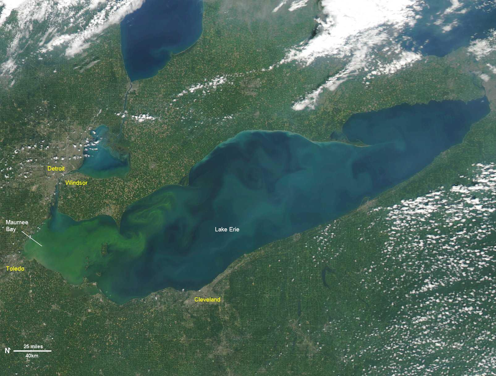

 Bur (1984) examined the population dynamics of Freshwater Drum (Aplodinotus grunniens) in Lake Erie in the late 1970s. In one part of his study, he measured the total length (TL) of all 1577 drum sampled and extracted scales for age estimation from a proportionate sample from each 10 mm length interval. The length and age data are recorded in FWDrumLE2.csv (view, download, meta).
- Separate the observed data into age- and length-samples. Construct an observed age-length key. [This step would have been accomplished in this exercise.]
- Use the semi-random age assignment technique from Isermann and Knight (2005) and the observed age-length key to assign ages to the unaged fish in the length-sample. Combine the age-sample and the age-assigned length-sample into a single data frame, add a variable to this data.frame that contains the 10 mm TL categories, and use the combined data frame to answer the following questions.
- How many fish are estimated to be age 3?
- How many fish are estimated to be age 8?
- Plot the age distribution for all fish.
- How many fish are in the 150 mm TL interval?
- What is the mean TL of age-4 fish?
- Plot the length-at-age with the mean length-at-age superimposed for all fish.
- Compare your results from the previous question to someone else’s results (or repeat the previous question). Did you both get the exact same results? Why or why not? If not, how different were they?
Continue with these data here.
from Derek H. Ogle , created 08-Nov-15, updated 08-Nov-15, Comments/Suggestions.